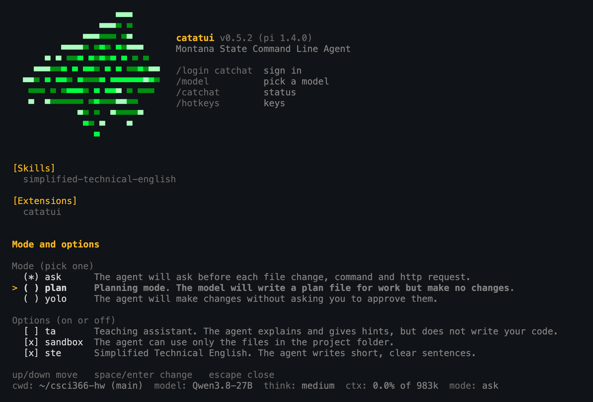

A command line agent harness for MSU students
Installed catatui from the old GitHub link? catatui moved to this site. If catatui --update doesn't work for you, run the install command again. It replaces the old install and keeps your key and settings.

catatui is a coding agent that runs in your terminal and uses the MSU CatChat models, which are free for MSU students & faculty.
catatui is built as an extension on top of the excellent pi harness.
macOS or Linux:
curl -fsSL https://catatui.cs.montana.edu/install.sh | shWindows (in PowerShell):
irm https://catatui.cs.montana.edu/install.ps1 | iexOpen a new terminal, go to your project and run:
catatuiThe first time you run it, catatui asks you to sign in with your MSU account in the browser and then it creates a CatChat API key for you. The key page only works on the MSU network, so if you are off campus connect to the VPN first.
Run /mode to change the mode or flip an option. By default catatui runs in ask mode.
| Mode | What it does |
|---|---|
ask | Asks before each file change, command and http request |
plan | Writes a plan to PLAN.md and changes nothing else |
yolo | Doesn't ask. Good luck. |
| Option | What it does | Default |
|---|---|---|
ta | The agent teaches and offers hints rather than writing code for you. We suggest you use this frequently. | off |
sandbox | Keeps the agent in the directory you started it in. This is very simple and a determined agent can get around it, so read commands before you allow them. | on |
ste | Uses Simplified Technical English, which keeps the annoying chattiness of many AI models down. Turn it off if you don't like the clipped responses. | on |
| Command | What it does |
|---|---|
/mode | Change the mode and options |
/undo | Put back the files the agent changed in your last request |
/model | Pick a CatChat model |
/context | Show what's using up the model's context window |
/catchat | Show your sign-in status and reload the models |
/catchat login | Sign in again and get a new key |
/catchat logout | Sign out and quit |
/hotkeys | Show the keyboard shortcuts |
Press Escape to stop the agent while it is working.
Run catatui --list-models to see the CatChat models you can use, and catatui --help for all the command line options.
/undo only covers the agent's file edits in the current session. It can't undo what a command did, so use git.
These come from pi. Run /hotkeys for the full list.
| Key | What it does |
|---|---|
Escape | Stop the agent |
Ctrl+L | Pick a model (same as /model) |
Ctrl+P | Switch to the next model |
Shift+Tab | Change the thinking level |
Ctrl+T | Show or hide the model's thinking |
Ctrl+O | Show or hide tool output |
Shift+Enter | New line in your prompt |
Alt+Enter | Queue a follow-up while the agent works (Ctrl+Q on Windows) |
Ctrl+G | Write your prompt in your editor |
Ctrl+V | Paste text or files (Alt+V on Windows) |
Ctrl+X | Copy the last answer |
Ctrl+C | Clear your prompt. Press it twice to quit. |
Pick a model with /model. If you aren't sure, stay with Qwen.
| Model | What it is |
|---|---|
Qwen3.8-27B | Alibaba. General and coding model, with thinking. The default and our recommendation. |
gpt-oss:120b | OpenAI open-weight model, with thinking. Good for coding. The fastest model. |
gemma4-31B-it | Google. General model with a long context. Good for coding. |
muse-glimmer:30b | Unknown Model. Very slow. |
nimble:9b | Unknown Model. |
mistral-small:24b | Mistral. General chat model. Weak at file edits. |
llama3.1:8b | Meta. Small general model. |
codegemma:7b | Google. Code completion model. Not for agent work. |
medgemma:4b | Google. Medical model for text and images. Not for coding. |
Goedel-Prover-V2 | Theorem prover (Lean). Not for general coding. |
catatui --version tells you if there is a newer version and catatui --update installs it. On Windows, --update prints the install command for you to run after you close catatui.
See the README for the full docs and troubleshooting.